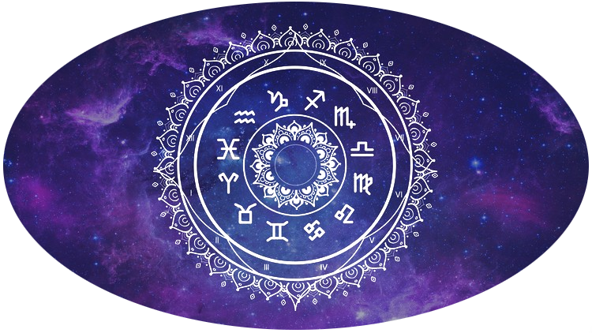

 L'astrologie est un ensemble de croyances et de pratiques fondées sur l'interprétation symbolique des correspondances supposées entre les configurations célestes (la position et le mouvement des planètes du système solaire) et les affaires humaines, collectives ou individuelles. Cette hypothèse fait que l'astrologie est souvent utilisée comme outil divinatoire. Le terme « astrologie », utilisé seul, renvoie généralement à l'astrologie occidentale. Elle est partie de Mésopotamie, a influencé l'Égypte, est passée en Grèce puis dans le monde romain. Si, selon Wilhelm Knappich, sa forme la plus ancienne est l'astrologie mondiale, les horoscopes des revues ou les affinités des signes du zodiaque sont ses versions populaires à l'heure de l'individualisme moderne. L'astrologie est maintenant considérée comme une pseudo-science, une croyance indûment présentée comme scientifique, ou comme une superstition, l'ensemble des recherches menées depuis l'Antiquité ayant abouti au fait que l'astrologie se place, par sa méthode même, en dehors du domaine rationnel ou scientifique. On sait depuis Hipparque, que, d'un siècle à l'autre, à un moment comparable (lorsque la route du Soleil franchit l'équateur à l'équinoxe du mois de Mars), les étoiles ne sont pas vues dans la même direction. Cette avancée du point vernal dans les constellations, alors que la définition des signes ne varie pas, montre que les signes astrologiques classiques sont définis par rapport aux points astronomiques, et non par rapport aux constellations. L'astrologie s'est enrichie de la planète Uranus en 1787, de la planète Neptune en 1846 et de l'ex-planète Pluton en 1930 (supprimée de la liste des planètes en 2006).
 Astrologie
Astrologie